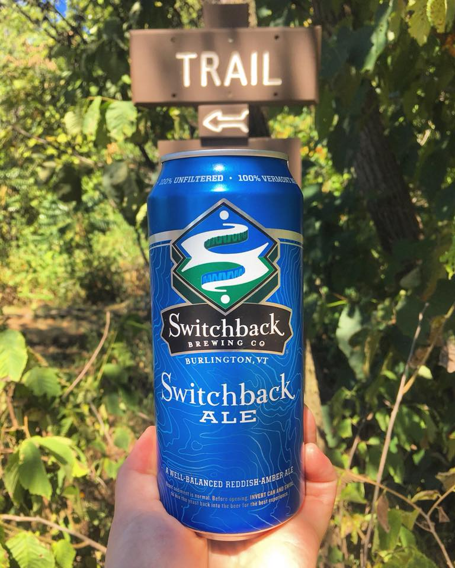

HOME
OUR PICKS
Switchback Ale
Switchback Brewing Company
Switchback Ale was developed as a flavor concept, not adhering to any style guidelines. Using only traditional ingredients, Switchback Ale is an unfiltered, reddish-amber ale which is particularly well-balanced, allowing for complexity of flavor coupled with an unusually smooth and refreshing character. Five different malts, select hop varieties, and our own specially cultivated yeast create an ale which leads with hop flavors and a subtle impression of fruit followed by a palate pleasing malty finish.
Located in Burlington, VT, The Switchback Brewing Company was founded in 2002 with one goal in mind – to brew unexpected, relatable, great tasting beer.
Check out their site HERE 